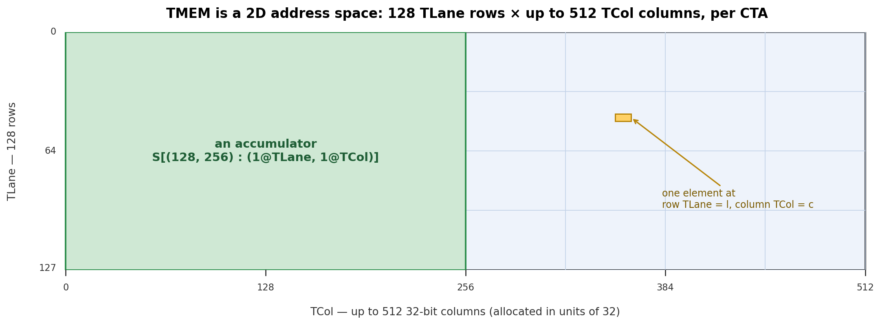

特殊内存：TMEM¶
概述
- TMEM（张量内存）是 Blackwell 专用的内存空间，由
tcgen05使用。它是每个 SM（流式多处理器）上的二维暂存区，有 128 个 Lane 行和最多 512 个 Col 列。 tcgen05.mma将其累加器写入 TMEM。块缩放 MMA 也使用 TMEM 存放缩放因子。- TMEM 通过 Lane 和 Col 寻址。在 TIRx 布局记法中，这两个硬件轴写作
TLane和TCol。 - TMEM 不像寄存器那样分配。核函数必须显式地分配和释放它，以 32 列为单位。
- 普通的共享内存加载和存储无法访问 TMEM。数据通过专用的异步
tcgen05指令在 TMEM、寄存器和共享内存之间移动。
在 Hopper 及更早的 GPU 上，Tensor Core（chap_tensor_cores）的累加器驻留在寄存器中。该模型易于推理。MMA 指令产生一个寄存器片段，核函数在计算阶段保持该片段存活，收尾阶段（epilogue）随后读取它、转换它并存储结果。
问题在于寄存器压力。寄存器是每线程的固定资源。随着 MMA 分块变大，累加器片段也变大。在某个时刻，累加器开始挤占线程需要持有的其他值。更大的分块对 Tensor Core 吞吐量有利，但将整个累加器保存在寄存器中使得这些更大的分块更难使用。
Blackwell 改变了数据路径的这一部分。tcgen05 的累加器不必在整个计算阶段都留在寄存器中。相反，tcgen05.mma 将累加器写入张量内存（Tensor Memory，简称 TMEM）。TMEM 是早期 NVIDIA GPU 没有的内存空间。它是 SM 上的二维暂存区，形状为 128 个 Lane 行乘最多 512 个 Col 列，其作用域为使用它的 CTA（协作线程数组）。
这一额外的内存空间使 Blackwell 能够支持更大的 Tensor Core 分块，而无需将整个累加器强制放入每线程寄存器。但 TMEM 并不像寄存器那样是自动的。编译器不会简单地将其作为普通寄存器存储分发出。核函数必须分配 TMEM、用正确的布局寻址它、用正确的指令搬入和搬出数据，并在 CTA 完成时释放它。
二维地址空间¶
TMEM 不是扁平的字节数组。它是一个二维地址空间。硬件将其两个坐标命名为 Lane 和 Col。有 128 个 Lane 行和最多 512 个 Col 列。每个 Col 是一个 32 位列。
这一形状很重要，因为 tcgen05.mma 使用此二维结构将累加器写入 TMEM。一个 TMEM 位置由一个 Lane 坐标和一个 Col 坐标描述，而非单个共享内存式的字节偏移。
当核函数在 TIRx 中声明一个 TMEM 缓冲区时，它赋予该缓冲区在这两个硬件坐标上的布局。在布局记法（chap_data_layout）中，我们将 TMEM Lane 轴写作 TLane，将 TMEM Col 轴写作 TCol。这些名称并非要取代官方硬件术语。它们是使 TMEM 维度在 DSL（领域特定语言）内部显式化的布局轴名称。
例如，一个累加器分块可以写作：
这表示该分块沿硬件 Lane 维度有 128 行，沿硬件 Col 维度有 N 列。在布局记法中，这两个维度表现为 TLane 和 TCol。布局是直接的：相邻的行沿 TLane 移动，相邻的列沿 TCol 移动。下图展示了该网格，硬件 Lane 沿 128 行向下，硬件 Col 跨越各列。

要点是 TMEM 是分块布局故事的一部分。它不仅仅是 Tensor Core 的隐藏后端存储。核函数必须为内存命名、从中分配列，并使用与 tcgen05 指令读写该内存方式相匹配的布局。
分配¶
在核函数能使用 TMEM 之前，它必须在其中预留空间。这与寄存器不同。寄存器由编译器分配。TMEM 由核函数显式分配。
分配按 CTA 进行。CTA 中的一个线程束（warp）请求一段 TMEM 列。请求以 32 列为单位发出，所请求的列数根据硬件分配规则向上取整。分配后，CTA 收到一个 TMEM 基地址。后续 tcgen05 指令使用该基地址访问预留区域。
将 TMEM 视为一种有预算的 CTA 资源会很有帮助，就像共享内存一样。CTA 拥有它已分配的 TMEM 列。核函数决定它需要多少列用于累加器、缩放因子或临时暂存。当 CTA 完成时，它必须释放该分配。
这使得 TMEM 成为核函数资源规划的一部分。更大的累加器分块可能提高 Tensor Core 吞吐量，但会消耗更多 TMEM 列。块缩放 MMA 可能需要额外的 TMEM 空间存放缩放因子。核函数必须在可用 TMEM 预算内安排这些用途，正如它必须在 SMEM 预算内安排共享内存缓冲区一样。
读写 TMEM¶
普通的 ld.shared 和 st.shared 指令无法访问 TMEM。TMEM 是一个独立的地址空间，因此数据通过专用的 tcgen05 指令移动。
有三条主要路径。
第一条路径是 tcgen05.ld，它将数据从 TMEM 加载到寄存器。这是收尾阶段在 MMA 阶段之后使用的路径。累加器已在 TMEM 中产生，但收尾阶段通常需要一个寄存器片段以便转换、应用逐元素操作并存储最终结果。
在 DSL 层面，一次 TMEM 加载分布在一个线程束组上。它降低（lowering）为四个线程束级别的 tcgen05.ld 操作，每个线程束一个。每个线程束处理 128 个 TMEM Lane 行中的 32 行，因此四个线程束合起来覆盖完整的 Lane 维度。在布局记法中，该完整维度是 TLane 轴。
该指令本身来自一族加载形状，如 .16x64b、.16x128b、.16x256b、.32x32b 和 .16x32bx2，重复因子从 .x1 到 .x128。所选形状决定了读取多少 TMEM 列以及每个线程接收多少寄存器。
重要的结果是寄存器片段布局。对于常见的收尾路径，通道（lane）l 接收来自 TMEM 行 l / 4 和两列的值。这产生了与早期世代直接从 MMA 暴露的相同类型的每通道累加器片段（chap_layout_generations）。这种连续性很重要。它意味着 Blackwell 收尾阶段可以重用已经用于 Ampere mma 或 Hopper wgmma 的相同寄存器级转换和存储结构，即使累加器在计算阶段驻留在 TMEM 中。

第二条路径是 tcgen05.st，它将数据从寄存器存回 TMEM。这是 tcgen05.ld 的反方向。当一个线程已经持有一个寄存器片段并需要将其放入 TMEM 时使用。例如，某些操作数或中间值可能在写入 TMEM 供后续 tcgen05 操作使用之前，先通过寄存器暂存。
第三条路径是 tcgen05.cp，它将数据从共享内存拷贝到 TMEM。这是一条批量拷贝路径，通常用于块缩放 MMA 中的缩放因子。在该情况下，TMA 或普通线程代码先在共享内存中准备好缩放数据，tcgen05.cp 将其搬入 Tensor Core 所期望的 TMEM 布局。
这三条路径都是异步的。tcgen05.ld、tcgen05.st 或 tcgen05.cp 指令可以在数据移动完成之前返回。因此，核函数在消费结果或重用存储之前必须使用正确的完成机制（chap_async_barriers）。
等待路径取决于指令。tcgen05.ld 通过 tcgen05.wait::ld 完成。tcgen05.st 通过 tcgen05.wait::st 完成。tcgen05.cp 与 tcgen05.mma 一样，通过提交组和 mbarrier 完成。如果数据从一组线程交给另一组线程，核函数可能还需要屏障（fence），以便接收线程以预期的顺序看到已完成的写入。
TMEM 位于 Blackwell Tensor Core 数据路径的中间。TMA 将操作数暂存到共享内存。tcgen05.mma 读取其操作数并累加进 TMEM。对于块缩放 MMA，缩放因子也可以暂存进 TMEM。计算阶段之后，tcgen05.ld 将累加器带回寄存器，收尾阶段转换并存储最终输出。